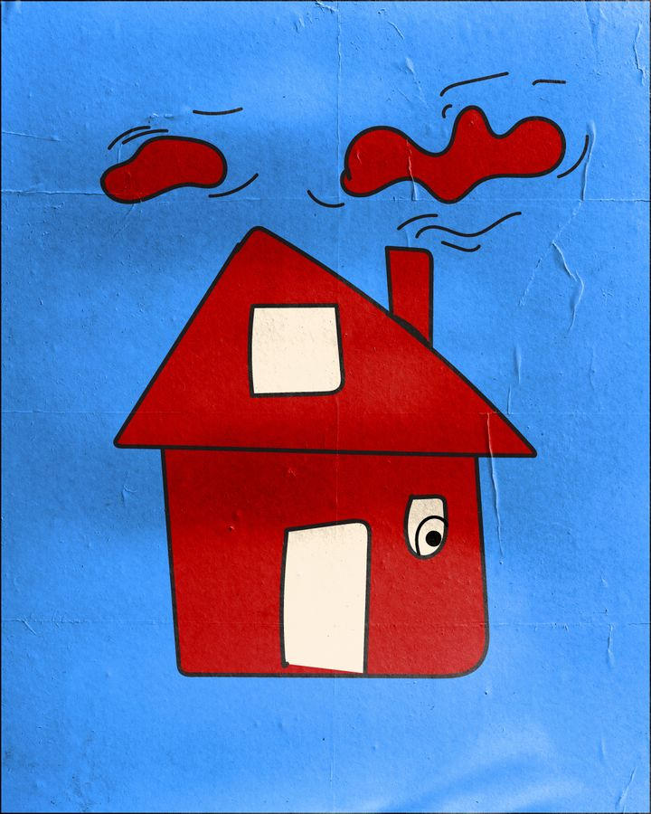
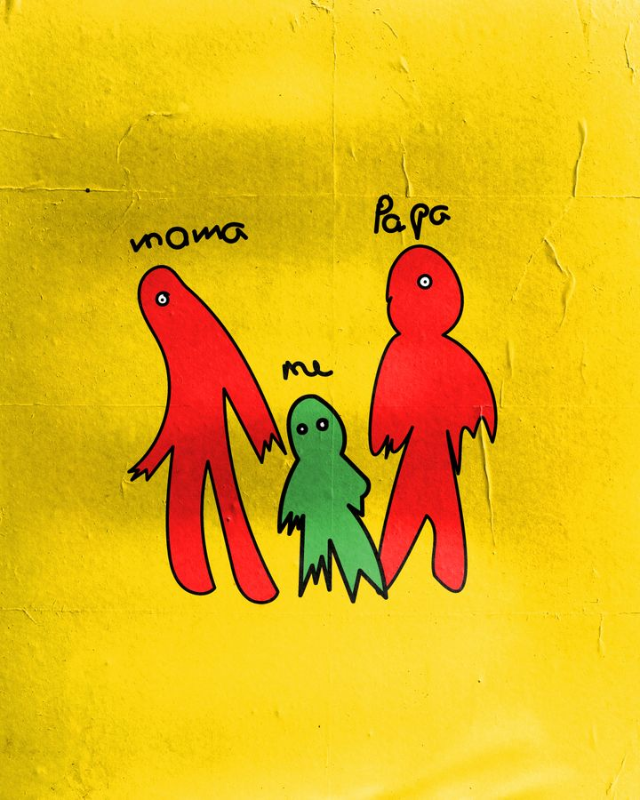
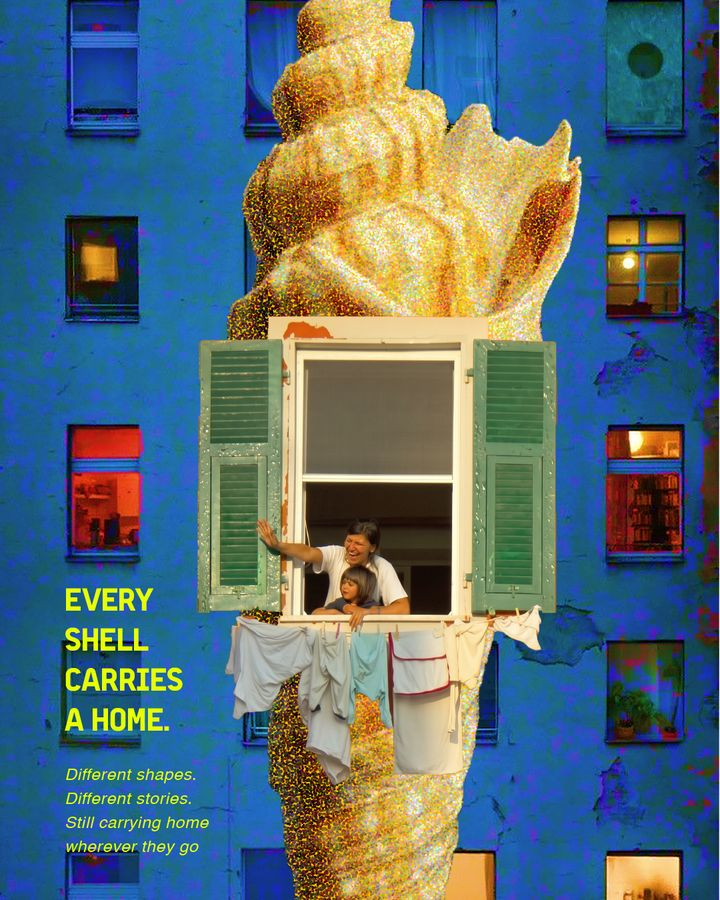
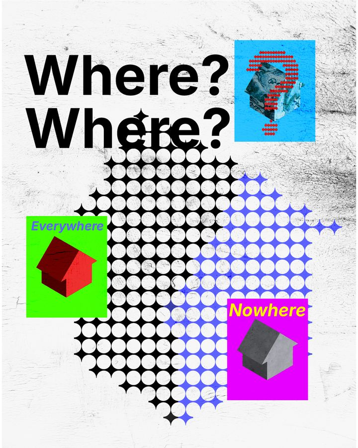
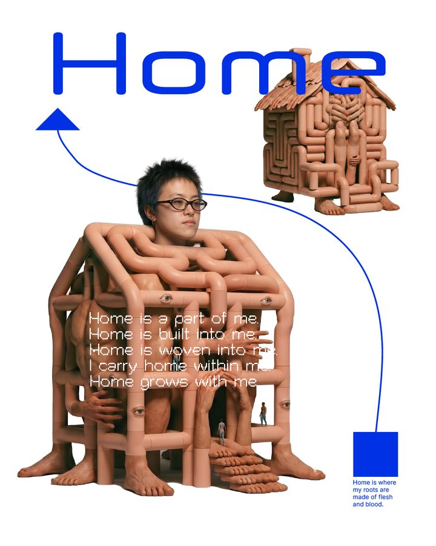
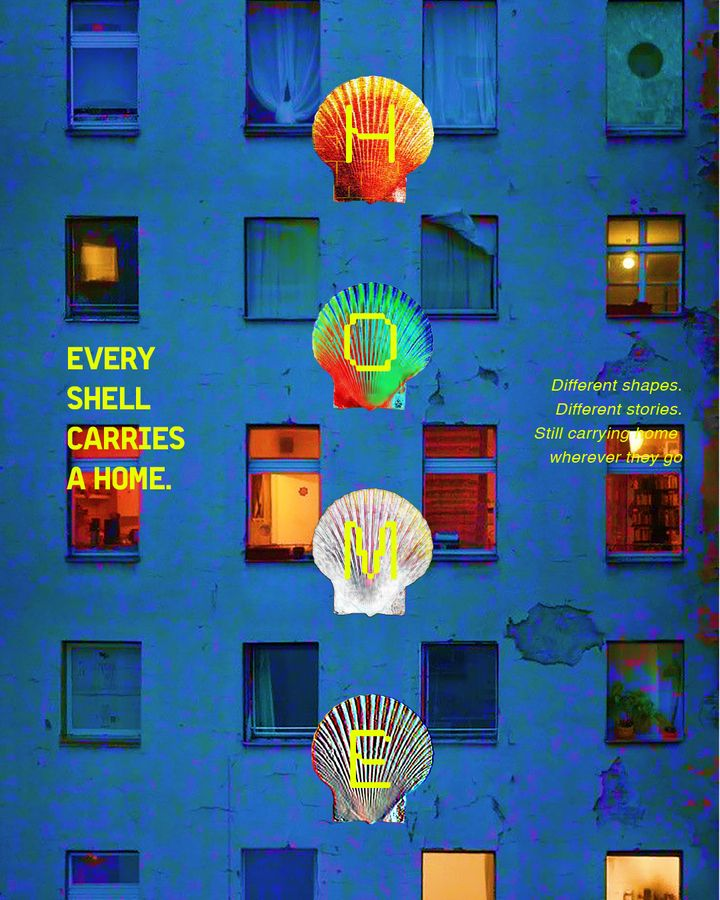
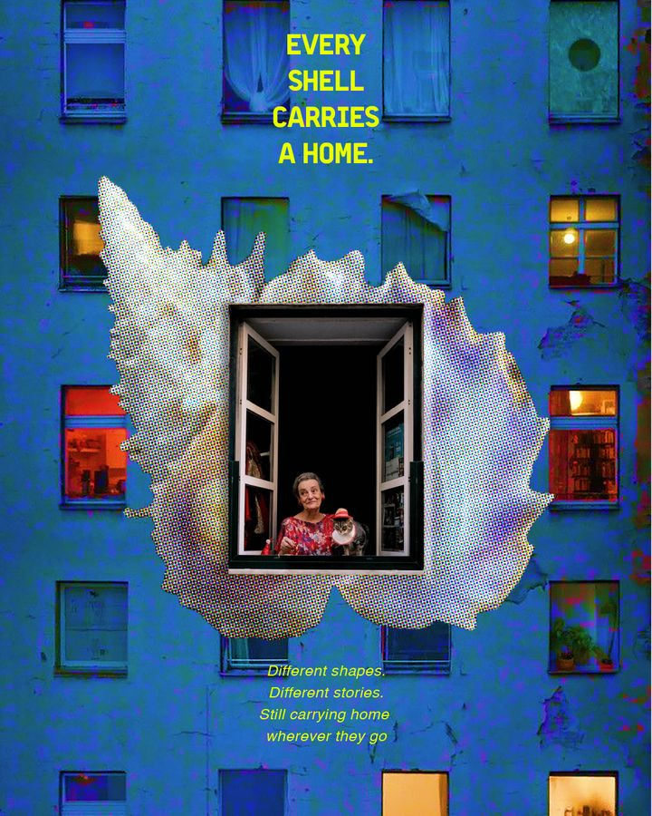

home
/hoʊm/ · n.
- 1The place you wake up in, and sometimes don’t want to leave.
- 2A shell you carry with you, whatever shape it grew into.
- 3A thing built into you that keeps growing with you.
Thirty days, one word. Every poster adds an entry that tries to define home — from a child’s crayon house to a shell you carry on your back.







Different shapes. Different stories. Still carrying home wherever they go.
Read all entries →